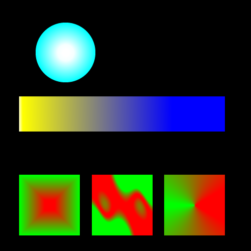

Assignment004C
Create the following five shapes the shape tool. Use the same gradient fill as show below.
Right-click the image and view the properties to determine your canvas size!
- Circle - Radial Fill
- Rectangle - Linear Fill
- Square - Rectangle Fill
- Square - Waves Fill
- Square - Cones Fill
